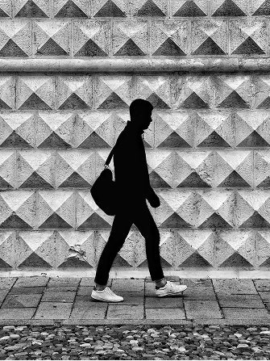
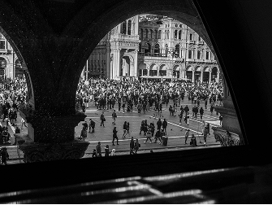
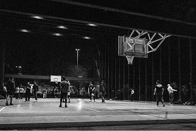
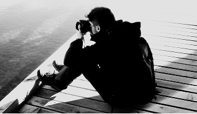
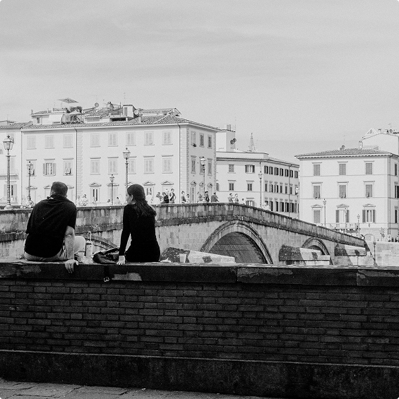
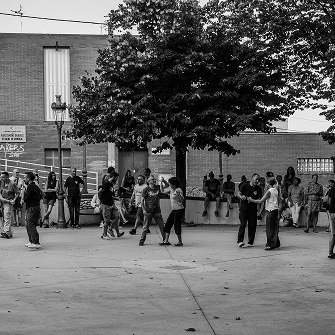

From graphic design to interior spaces, see the breadth of my creative explorations.
Photography
Echoes of Italy
'Echoes of Italy' is my lens on the country's timeless charm — candid moments, architectural details, and sun-kissed scenes.

Wandering and wondering, lost in the rhythm of the city.

A symphony of motion and architecture, framed by history.

A study in contrasts: light, shadow, and the rhythm of the game..
From sun-drenched piazzas to intimate still-lives, I aimed to capture the soul of the country through light and composition.

Dockside perspective, capturing the soul of the water.

Venice, and a moment between two.

A spontaneous rhythm, a shared moment, pure joy.